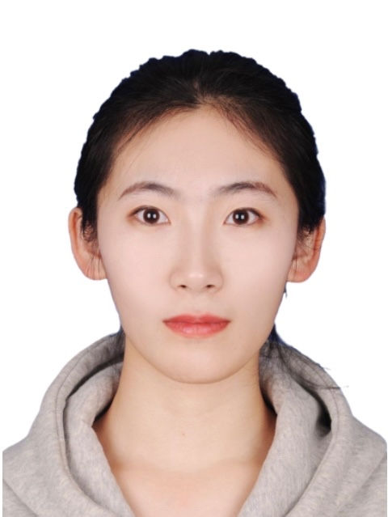
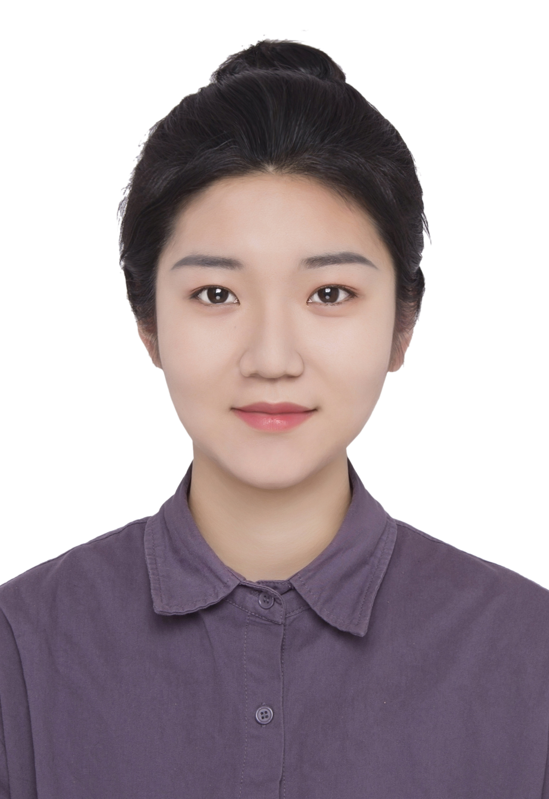
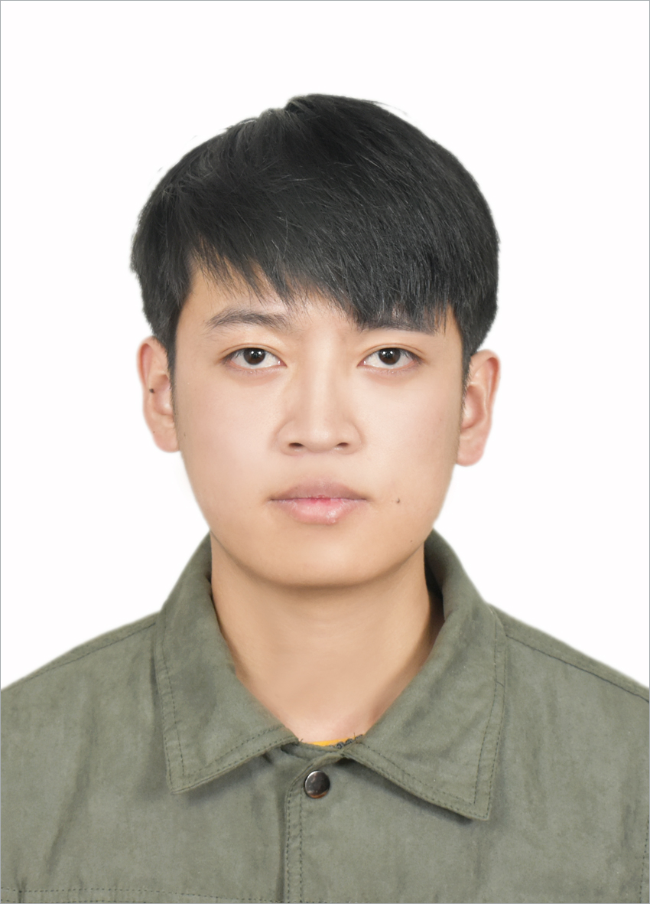

Principal Investigator

Rui Liu (刘瑞)
Rui Liu is a professor in Department of Computer Science at Inner Mongolia University of China, who is leading the Speech understanding and Speech generation (S2) research group.
招生信息：年度招收硕士、博士生，招收计算机、软件工程、数学等专业。
欢迎报考硕士、博士生，优秀者可推荐至新加坡国立大学（NUS）、新加坡科技与设计大学 (SUTD)、香港中文大学(深圳校区)、华南理工大学等多个合作单位访问学习或联合培养；
欢迎本科生参与课题组科研训练和论文发表，具有ACM、数学建模、国创等经验者优先，优秀者可推荐至微软、腾讯等多个合作单位实习。
Recent News 
- 2022/01 Two papers about Visual TTS and ASR have been accepted by ICASSP 2022.
- 2022/01 Elected as executive member of CCF Professional Committee of Speech Dialogue and Auditory Processing .
- 2021/12 One paper about Real-time and High-fidelity Mongolian TTS is accepted for publication in Journal of Chinese Information Processing.
- 2021/12 Our paper about Mongolian emotional speech synthesis was awarded as "Best Paper" at IALP 2021.
- 2021/11 One journal paper about emotional voice conversion is accepted for publication in Speech Communication.
- 2021/10 Invited to serve as a reviewer for ICASSP 2022.
- 2021/06 One paper about emotional TTS has been accepted by INTERSPEECH 2021.
- 2021/04 One journal paper about expressive TTS is accepted for publication in IEEE-TASLP.
- 2021/04 One journal paper about fast and high-quality TTS is accepted to be published in Neural Networks.
- 2021/01 Two papers about expressive TTS and emotional voice conversion have been accepted by ICASSP 2021.
- 2020/12 One journal paper about expressive Mongolian TTS is accepted for publication in IEEE-TASLP.
PhD Student
Master Student
2022
|

|
||
| Bin Liu (刘彬) | Jinhua Zhang (张锦华) | Huan Liu (刘欢) |
|

|

|
|
| Jiatian Xi (席嘉甜) | Zening Ma (马泽宁) | Kailin Liang (梁凯麟) |
2021
 |
 |
|
| Yifan Hu (胡一帆) | Pengkai Yin (尹鹏恺) | Haolin Zuo (左昊霖) |